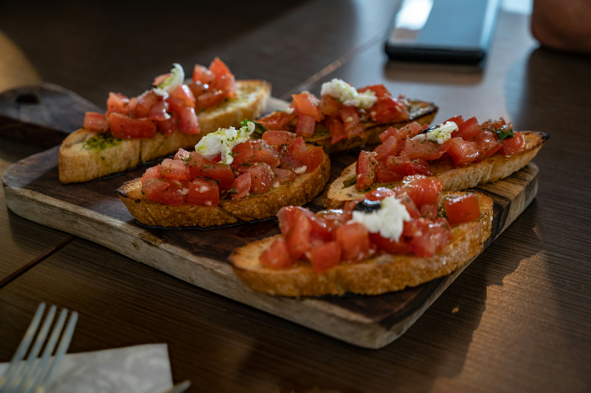

Foto von Mike van den Bos auf Unsplash
Ingredients:
- 1 rustic baguette or ciabatta loaf, sliced diagonally
- 4 ripe Roma or vine tomatoes, finely diced
- 2 cloves garlic (1 minced, 1 peeled and left whole)
- 1 handful fresh basil leaves, thinly sliced
- 3 tbsp extra virgin olive oil, plus extra for brushing
- 1 tsp balsamic glaze (optional)
- Flaky sea salt and freshly cracked black pepper, to taste
Steps:
- In a medium bowl, combine the diced tomatoes, minced garlic, sliced basil, 3 tbsp olive oil, sea salt, and black pepper. Let the mixture sit for 15 minutes so the flavors meld.
- Brush the bread slices lightly with olive oil on both sides.
- Toast the slices in a grill pan, skillet, or under the oven broiler for 2–3 minutes per side until golden and crispy.
- While the bread is still warm, gently rub the surface of each slice with the whole peeled garlic clove
- Spoon the tomato mixture generously onto the toasted bread (leaving excess liquid behind in the bowl), finish with an optional drizzle of balsamic glaze, and serve immediately.